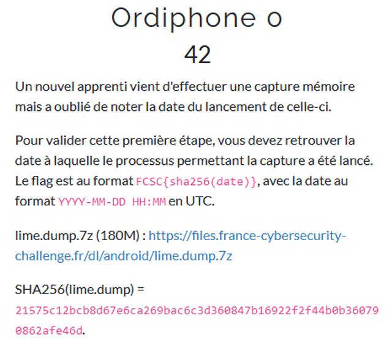
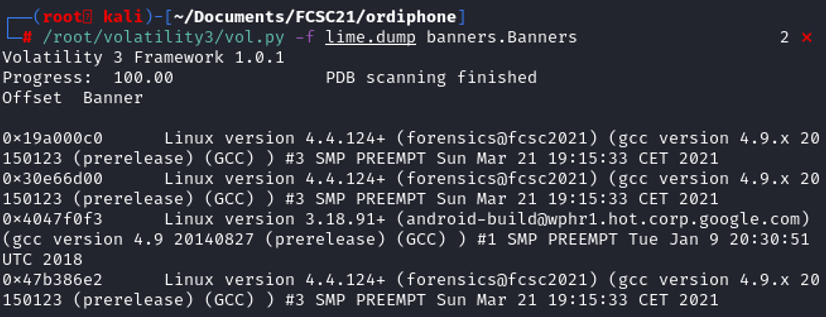

The subject is telling a lot about this challenge. We have downloaded a memory dump named lime. LiME (Linux Memory Extractor) is a tool that allow volatile memory acquisition from Linux and Linux-based devices. THe title of the subject is "Ordiphone", that can be understood as "Smartphone". The main and most popular smartphone operating system is Android, which is Linux based.
Using volatility, we can retrieve the version of the android device, get the list of running process at the moment of the memory dump and even the bash history to see what commands have been run.

The other volatility command didn't give us any result, we cannot use volatility2.7 because we might not have the adapted profile, execept to create one. Let's see how can we extract memory information with LiME.
To create a LiME memory dump it uses the command insmod. For example: